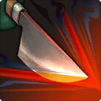
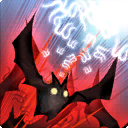
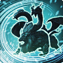
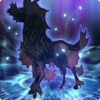

No.2 火炎放射 (Lv.50)
- 纷争要地布雷福洛克斯野营地 - 6号哥布林坦克 Lv.50
BOSS #3
- 幻龙残骸密约之塔 - 魔导炮艇 Lv.50
BOSS #2
- 欧米茄时空狭缝 阿尔法幻境3 - 欧米茄 Lv.70
同一副本还有专属技能 94芥末爆弹 101生成外设
BOSS #3
BOSS #2
同一副本还有专属技能 94芥末爆弹 101生成外设
BOSS #2，打破两个蛋后使用，即死效果与比例伤害有效。同一副本还有专属技能 9苦闷之歌。
血量低于 60% 后使用
BOSS #2
BOSS#2召唤的小怪
BOSS #1后小怪
远离目标时瞬发使用
BOSS #3前小怪
BOSS #2前小怪
BOSS #1前小怪
BOSS #4，同一副本还有专属技能 4狂乱
BOSS #2，解除限制时也必定学会
必定学会
BOSS #2
BOSS #2后面
BOSS #1门前小怪

BOSS #3
BOSS #2

BOSS #1前小怪
开场小怪
BOSS #2前小怪
BOSS #1前小怪
2号boss无限刷，boss之前同名怪不会使用该技能
BOSS #3召唤的小怪
BOSS #1前小怪
BOSS#2前后小怪
BOSS#1后小怪4只，体力低于30%后使用
BOSS #2召唤的小怪
BOSS #1前小怪，无读条顺劈，同一副本还有专属技能 60魔法锤 76小侦测。恰好是第一波怪中唯一有催眠抗性的，同步时推荐使用职能技能先将第一波全部催眠，等它放技能后寒冰咆哮+超振动
BOSS #2前一只, BOSS #3前两只，BOSS #3
BOSS #2前小怪
BOSS #2，即死效果与比例伤害有效
2号boss后2体
开场1体
1号boss后3体
2号boss后打完粘液怪1体
无读条瞬发使用，赋予自身回避率提高的buff
2号boss后2体

BOSS #3
生命值低于50%时咏唱，进本见到的前三只怪。即死效果与比例伤害有效。注意只有开怪的小队可以学到
BOSS #2前精英怪1只，同步时可以考虑催眠整波怪后单独打醒拉走
BOSS #2前精英怪1只，同步时可以考虑催眠整波怪后单独打醒拉走
成就危命。即死效果与比例伤害有效。似乎在低体力时更容易咏唱
第三波小怪之一。即死效果与比例伤害有效，但冻结、石化、眩晕、睡眠、麻痹等效果无效
BOSS #3
生命值低于50%时咏唱，进本见到的前三只怪。即死效果与比例伤害有效。注意只有开怪的小队可以学到
BOSS #2前精英怪1只，同步时可以考虑催眠整波怪后单独打醒拉走
BOSS #2前精英怪1只，同步时可以考虑催眠整波怪后单独打醒拉走
成就危命。即死效果与比例伤害有效。似乎在低体力时更容易咏唱
第三波小怪之一。即死效果与比例伤害有效，但冻结、石化、眩晕、睡眠、麻痹等效果无效
只对变鸡角色使用
不需要推调查员，更容易招募到人。无读条点名，附带火属性烧伤，长得和白光之鞭差不多，一般压不掉
BOSS #1后小怪
BOSS #3
BOSS #1，即死效果与比例伤害有效
BOSS #1即死效果与比例伤害有效
BOSS#3。解除限制时也必定学会。低于一定生命值后咏唱，别秒了。
BOSS#1。解除限制时也必定学会，无读条全屏AOE。
击败的第三波敌人之一。解除限制时也必定学会，无读条全屏AOE。同一副本还有专属技能 80正义飞踢
击败的第三波敌人之一。解除限制时也必定学会。同一副本还有专属技能 80正义飞踢
在PART.2武器切换为弓后，瞬发使用
天青斗场中最难的一关，请慎重考虑
BOSS #2前小怪
BOSS #1及其召唤的小怪
BOSS #1
BOSS #2
疑似贴近后更容易使用，同一理符还有 62蛙腿。从伊修加德基础层接取理符，大规模的也一起接个吧
BOSS #2
会使用但是个扇形AOE
BOSS#1后小怪
若咏唱过程中治疗目标被击杀，咏唱会被打断
若咏唱过程中治疗目标被击杀，咏唱会被打断
BOSS#3前精英怪。即死效果与比例伤害有效
BOSS #2
需要靠近才会使用，同一理符还有 55深渊贯穿。从伊修加德基础层接取理符，大规模的也可以。
需要靠近才会使用
BOSS #2
BOSS #2前后各有一只
BOSS #2前后各有一只
BOSS #1后小怪，在所有人远离拉断线后更容易咏唱
BOSS #2
老三前的精英怪
同步摸一下仇恨后解除同步等危命失败也有相同概率学会
BOSS#2 召唤的小怪，即死效果与比例伤害有效
1号boss前3体，第3体较远，同时拉到的其他敌人HP50%以下时使用
同时拉住另一只怪并将另一只怪血量削到55%以下，注意不要和附近同模小一些的天窗瓦魔蛾搞混
BOSS #1
最终BOSS。场地闪烁蓝光时，里面有人会产生暗物质粘液怪，神杖巨蛇与暗物质粘液怪接触后发动。
最终BOSS
BOSS#1 同一副本还有专属技能 87污泥泼洒
BOSS #2后小怪。同一副本还有专属技能 27诡异视线 60魔法锤 恰好是BOSS #2后第一波怪中唯二有催眠抗性的，同步时推荐使用职能技能先将第一波全部催眠，等它放技能后寒冰咆哮+超振动
BOSS#1召唤的小怪，无法从此前同名小怪处习得
最终阶段上天运动会时瞬发使用。同一副本还有专属技能 41精神冲击
最终阶段上天运动会时瞬发使用。同一副本还有专属技能 41精神冲击
BOSS #2
BOSS #3，需故意留下三龙头之一或更多，否则无法学会，推荐携带73蜕皮来驱散冻伤，降低翻车率
BOSS #3，同一副本还有专属技能 75捕食
BOSS #3
BOSS #3
BOSS #1，在另一方被击杀后使用
疑似高血量更容易施放
必定学会。原因未知

BOSS #1
1号boss前、3号boss前小怪不会使用，仅2号boss前过道的1体会使用
同一副本还有专属技能 2火炎放射 101生成外设
BOSS #3，解限时若永远留一分身不打，可无限次学。日取其半用之不竭
BOSS#1。即死效果与比例伤害有效
疑似生命值达到50%时使用
体力降到25%时使用
BOSS#1召唤的小怪。即死效果与比例伤害有效
BOSS #3
BOSS #1，即死效果与比例伤害有效
BOSS #1
PART.1
PART.1
BOSS #3
BOSS #1
BOSS #3
BOSS #2转场技能
BOSS #3